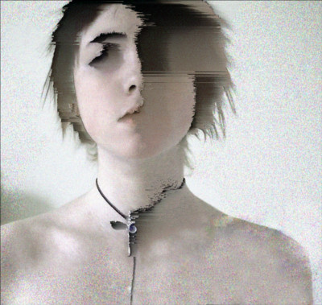
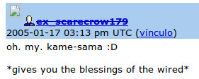
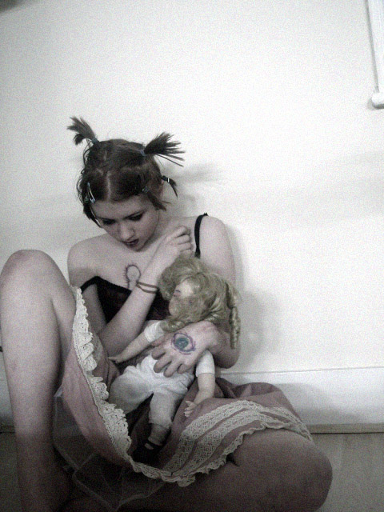

The Child who wanted to be Goddess (on Cracky-chan & Lain)
Author : yemeth

Once upon a time a little girl who wanted to be a Goddess lived in Oxford.
The first time she saw Lain, her brother said to her, “you’re just like Lain!”, because she also was a silent girl who liked to stay in her room with her computer.
She liked being called Lain. And she tried to look like her as much as possible. She wanted to be Lain. She had similar pyjamas, with mittens that looked like bear paws, but they became too small by the time she had reached 13. She even cut her hair like Lain, and before she got tired of it she also had the long lock of hair on one side with the elastic band.
Layer 01: Lain
Lain is a strange anime series, which never fully explains things but gives you clues on what is going on, so that events may often have several different interpretations.
In the world of Lain, “the wired” is the Internet but in a different way. It overlaps with the real world, and is some sort of Metaverse in that people inside it use avatars, not unlike what we can now find in OpenSim or Second Life.
As the story develops, we find out that the real world and the wired are linking deeper and deeper into each other until there’s a point they can fully connect through Protocol 7. But it is not just the wired: the collective unconscious of the human race emerges as a global brain, connecting humans among themselves.
The world we conceive as real is a shared hallucination which can change if such is the will from those who inhabit it, and the same thing happens in the wired. However, it is once mentioned in the series that there is also a role to be played by the ECCO, the Earth Coincidence Control Office that John C. Lilly spoke about.
Of uncertain origin, Lain is a child-Goddess that becomes mythical once she starts to dive deep into the wired. She becomes the object of devotion of the Knights of the Eastern Calculus, a group of mystics/hackers who point to the idea of the templar knights. It is for her that they open the sky and her face appears between the clouds. And in the wired, Lain ends up putting the false God in its place, yet the nature of the mystery that she is will never be fully revealed: She who kept Protocol 7 inside her brain, to put together the wired and meatspace and connect humans among themselves and to their collective unconscious.
Lain is a goddess who exists physically.
Layer 02: Cracky
From her computer in Oxford, Olivia had already posted in 4chan in January 2005. A few days later she was talking in Livejournal on how much she wanted to be Lain.
And then the obsession blew out. This is quite detailed in this article: Olivia says sup 4chan and her pictures make people go crazy, so they start frantically searching for her and mythologizing her. They turn her into a Goddess. They turn her into the religion of Anonymous, the de-hierarchized form of organization which some years later would become commonplace and filled with paraphernalia in media transmissions under masks of Guy Fawkes. Cracky followers are and were as well Anonymous, and you might never know who or how many they are.
"You are not alone. Whenever you connect to the wired, you will always be welcome. That is the reason you were born."
Just like in the eighth episode in Lain every avatar in the wired wore her face, the search of Cracky and that which is beyond her became an Internet madness like none before, and quite a few fans took pictures of themselves imitating her aesthetics as a tribute.
Some of them, mostly from the most devoted anons, were searching for some truth in her, just like the Knights who beyond their hacking in the wired are searching for some truth "Even we cannot still understand what you are. But I love you.", that is what the enemies of Lain say. “Nobody ever stops loving Cracky”, we say in our world.
"You were born in the wired. You were a legend and a heroin from fairy tales in the wired…”. ¿Is this sentence about Lain, or about Cracky? ¿Is there any difference?

Layer 03: Magick
We pray the gods to acquire their characteristics.
If I want Eros to take control over me so I feel in love with all around me even without some clear reason for it to be so, I just need to get my prayers ready, some altar to Eros, surround myself with stuff that makes it easier to call him unto me, and to be fervent enough so that this god arrives and possesses me.
This is the way devotion works. You become that which you worship. And it doesn’t have to be necessarily a God. Since they are fictions, you can use any other fictions.
Summon warrior strength and martial energy in the form of Orion by surrounding
yourself with images from Kirby comics, by playing "Mars" from the Planets Suite" or the Beatles "Revolution #9" or simply the sounds of gunfire and bombs from a special effects record. Summon James Bond before a date by playing the themes to Goldfinger and Thunderball while dressing in a tuxedo. Or try summoning Dionysus, god of creative delirium, in his Trickster aspect, as Ace Ventura, Pet Detective from the Jim Carrey films - surround yourself with your own pets or toy animals, play the movies, imitate the actor's distinctive moves and use them to formulate a physical sigil which you can enact within in your designated ritual space
[How to Chat Up Gods, Grant Morrison]
Or cut your hair just like Lain, even the long part at the side with the elastic band around it. Want to be her. Dress up like Lain, stay locked up and just interact through the Internet like her. Want to be her. Wear pyjamas like hers. Want to be her. Like a Goddess of the wired, who wakes in those who see her the certainty that there is something more and that it is she who has it. Want to be her. To be a legend on the wired, a fairy tale heroine of the Internet...
A child who was a natural witch, clever and skillful and obsessed, who turned her more or less conscious Lain invocation into a full manifestation that made the Wired go crazy, which shock waves can be still found today in a few semi-hidden boards that keep alive the flame of devotion and her memory.
But, why do so few remember Cracky-chan today? Only a few devotees keep the flame alive, and Cracky-chan has not become what she was supposed to become: the suitable religious expression in the times of the Anonymous that saw her arise in 4chan, the same Anonymous that years later would turn into this thing we now often watch in our media with all the Guy Fawkes masks paraphernalia. Cracky was the one true queen, she was the Goddess for the new Anonymous world that was rising. But then, what happened? Why did people forget? What failed? Or was that the way it had to be so Cracky would fully become Lain?

Layer 04: Regrets
Please leave me alone. I was really flattered, now fuck off. Fuck, I was barely 15 years old. She would have never thought she’d end up having a cult, nor did she want one. Thanks to all the creeps who frightened her. I’m never going to keep an online journal again on the Internet. Part of it made me laugh, but now guys seriously, stop.
Scared by the obsession and devotion her pictures caused among the Anonymous, Olivia fled. She didn’t want to be worshipped. She didn’t want to have her own cult. She didn’t want to be the Goddess that the Internet had turned her into.
And there has never been any further public appearance of her. Only a few devotees remember.
Afraid of the consequences of her acts, Lain decides to ‘reset’ reality erasing everyone’s memories, and then she disappears. Everyone forgets about her. Well, almost. There’s a few who still remember. And her face still sounds familiar to some. Yet basically Lain has done it, she has escaped her goddess status and disappears from everyone’s lives, almost from the whole of reality.
When Olivia became Cracky-chan in the Internet, she was Lain from the beginning to the very end.
So, if there’s a moral to the story of this tremendous natural witch, it might be this: be careful with magick, since you might obtain exactly what you asked for.
 RSS
RSS